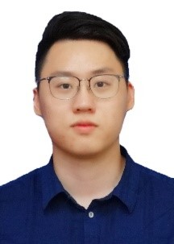

|
Yaoxin Shen申曜鑫
EDUCATION
B.E.in Mechanical Engineering
Huazhong University of Science and Technology (HUST)
Email: shenyaoxin@126.edu; shenyaoxin@163.com
|

|
|
Biography
I am going to study as a MS student of Mechanical and Aerospace Engineering at University of California, San Diego.Previously, I received Bachelor degree from School of Mechanical Science and Engineering, Huazhong University of Science and Technology under the supervision of Professor Xinyu Li and Professor YongAn Huang.
I have broad research interests in control, machine learning and flexible electronics skin.
Publications and Patents
-
H. Ju, S. Xin, Y. Shen, X. Li, “A Robotic Arm Based Automatic Solar-Tracking System” 2019 IOP Conference Series: Materials Science and Engineering 563 032001
-
L. Yin, P. Deng, J. Ma, Y. Shen, J. Ren, S. Zhang, Y. Huang, “Large-area, Fully Conformable, μm-thick e-tattoo for High-fidelity in situ Personal Health Monitoring” 2019 IEEE-NANO
-
Y. Wang, L.Yin, Y. Bai,……,Y. Shen. et al. Electrically-compensated, tattoo-like electrodes for epidermal electrophysiology at scale. Nat Electron. (Under review/ Eleventh author)
-
Patent, Lixing Wang, Yaoxin Shen, Xin Yu, Pengzong Zeng, “An Automatic Shrimp Peeling Machine” 201920474900.8
-
Patent, Lang Yin, Yaoxin Shen, Pengfei Deng, Shuchang Zhang, Jiaji Ma, “An Ultrathin and High SNR Flexible Exercise Health Monitoring System” 201910328709.7
-
Patent, Pengfei Deng, Yaoxin Shen, Shuchang Zhang, YongAn Huang “A Preparation Method and Product of Large-area Nano Flexible Electrode Based on Laser Welding” 201910355081.X
-
Patent, Yaoxin Shen, Shuchang Zhang, Pengfei Deng, Zhaoyu Yang, “A Preparation Method and Product of Flexible Electronic Skin” 201910551463.X
Experience
Honors & Awards
-
First Prize of the 16th National “Challenge Cup” College Students Extracurricular Academic Science and Technology Competition
11/2019
-
Special Award, “Challenge Cup” College Students Extracurricular Academic Science and Technology Competition, Hubei Province
5/2019
-
First Prize, “Qiushi Cup” College Students Extracurricular Academic Science and Technology Competition, Huazhong University of Science and Technology
3/2019
-
Recreational and Sports Scholarship
9/2018
English Capability & Skills
Skills
- C++, MATLAB, python, ABAQUS, AutoCAD, SolidWorks, Inventor
English Capability
- TOEFL: 96 (R:28 L:25 S:22 W:21)
- BEST SCORE: 101 (R:28 L:28 S:23 W:22) Jan 07, 2020
- GRE: 322 (V:152 M: 170 AW: 3)